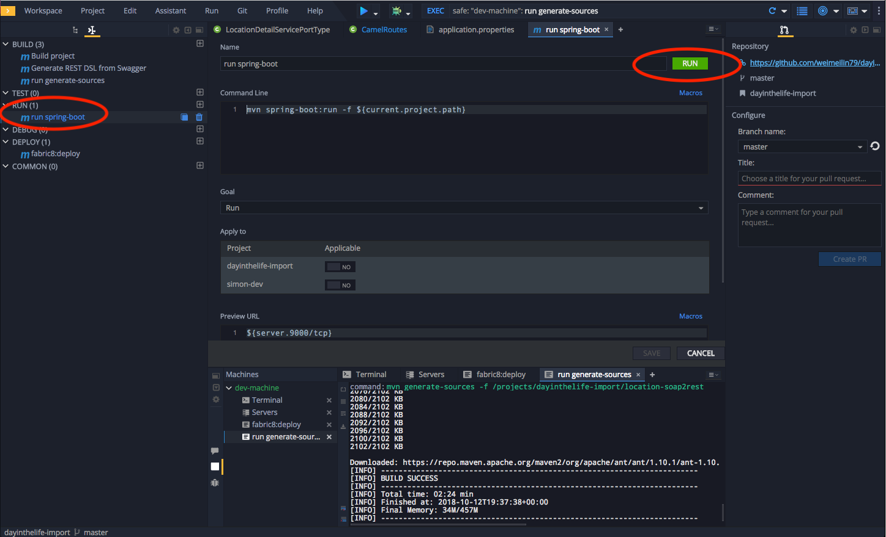
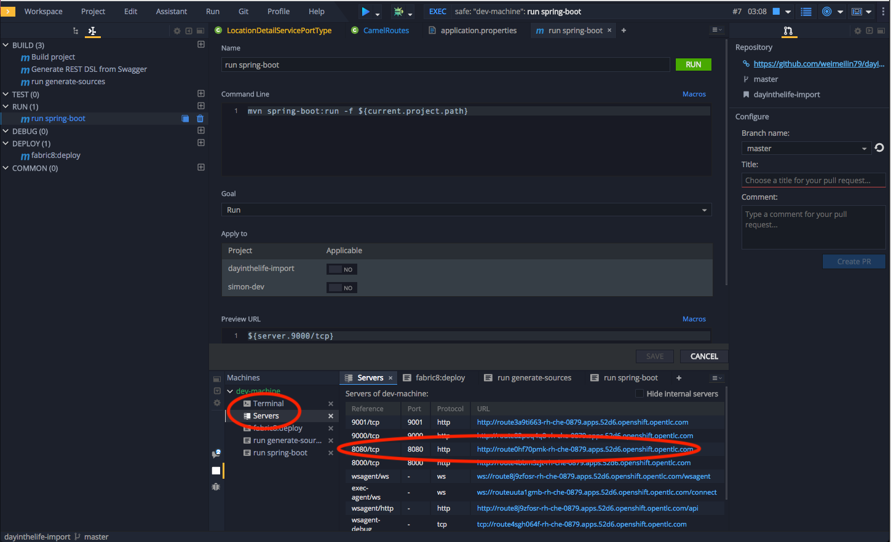
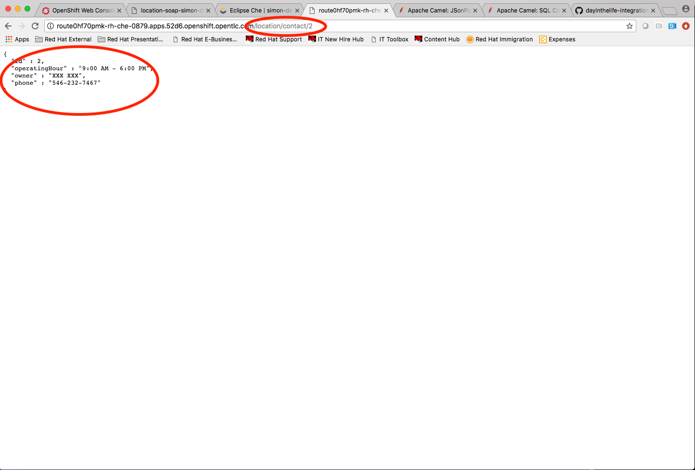

<img src=”../images/agenda-03.png “Login” width="900” />
Another important use case in developing API’s is to take an existing legacy SOAP service and wrap it with a new RESTful endpoint. This SOAP to REST transformation is implemented in the API service layer (Fuse). This lab will walk you through taking an existing SOAP contract (WSDL), converting it to Java POJO’s and exposing it using Camel REST DSL.
Eclipse Che, our online IDE, provides important functionality for implementing API services. In this lab you can see how our Eclipse Che and Fuse can help with SOAP to REST transformation on OpenShift.
Navigate back to your Eclipse Che workspace and open the terminal window.
<img src=”../images/00-open-terminal.png “Open Terminal” width="900” />
Log into the Openshift console:
<img src=”../images/00-openshift-loginpage.png “Commend Login” width="900” />
Obtain your user login command by clicking on your username on the top right hand corner and select Copy Login Command
<img src=”../images/00-commend-login.png “Commend Login” width="900” />
Paste the login command for Openshift via the Terminal window. Use the double check the {OPENSHIFT_APP_URL} matches the environment given to you by the instructor
oc login {OPENSHIFT_APP_URL} --token=XXXXX
Build and deploy the SOAP application using source to image(S2i) template. Paste the commend to the terminal.
oc new-app s2i-fuse71-spring-boot-camel -p GIT_REPO=https://github.com/epe105/dayinthelife-integration -p CONTEXT_DIR=/projects/location-soap -p APP_NAME=location-soap -p GIT_REF=master -n [OCPPROJECT]
Remember to replace the [OCPPROJECT] with the OpenShift project(NameSpace) you used in last lab. [OCPPROJECT] should be your username
Once the build and deploy is complete, navigate back to your Openshift web console and verify the project is running.
<img src=”../images/00-verify-location-soap.png “Verify Pod” width="900” />
In the OpenShift console, click on the route associated with the location-soap deployment. A pop-up will appear. Append the /ws/location?wsdl path to the URI and verify the WSDL appears. Copy the link to the clipboard.
<img src=”../images/00-verify-wsdl.png “Verify WSDL” width="900” />
Return to your Eclipse Che workspace and open the dayintelife-import/location-soap2rest project.
Open the pom.xml file and scroll to the bottom.
Uncomment out the cxf-codegen-plugin entry at the bottom.
Update the <wsdl> entry with your fully qualified WSDL URL e.g. http://location-soap-userX.apps.ocp-ai.redhatgov.io/ws/location?wsdl.
Be sure to replace userX with your username.
<img src=”../images/00-uncomment-codegen.png “Uncomment codegen plugin” width="900” />
We now need to generate the POJO objects from the WSDL contract. To do this, change to the Manage commands view and double-click the run generate-sources script. Click Run to execute the script.
<img src=”../images/00-generate-sources.png “Generate Sources” width="900” />
Once the script has completed, navigate back to the Workspace view and open the src/main/java/com/redhat folder. Notice that there are a bunch of new POJO classes that were created by the Maven script.
<img src=”../images/00-verify-pojos.png “Verify Pojos” width="900” />
Open up the CamelRoutes.java file. Notice that the existing implementation is barebones. First of all, we need to enter the SOAP service address and WSDL location for our CXF client to call after the camelContext and before the @Override.
...
@Autowired
private CamelContext camelContext;
private static final String SERVICE_ADDRESS = "http://localhost:8080/ws/location";
private static final String WSDL_URL = "http://localhost:8080/ws/location?wsdl";
@Override
public void configure() throws Exception {
…
```
To do this, include the following code (making sure to update the {YOUR_NAME_SPACE}, {OPENSHIFT_APP_URL} and username values in the to("cxf:// URL):
For example YOUR_NAME_SPACE should be userX and {OPENSHIFT_APP_URL} could be apps.ocp-ai.redhatgov.io.
Check with your instructor if you are not sure.
...
rest("/location").description("Location information")
.produces("application/json")
.get("/contact/{id}").description("Location Contact Info")
.responseMessage().code(200).message("Data successfully returned").endResponseMessage()
.to("direct:getalllocationphone")
;
from("direct:getalllocationphone")
.setBody().simple("${headers.id}")
.unmarshal().json(JsonLibrary.Jackson)
.to("cxf://http://location-soap-{YOUR_NAME_SPACE}.{OPENSHIFT_APP_URL}/ws/location?serviceClass=com.redhat.LocationDetailServicePortType&defaultOperationName=contact")
.process(
new Processor(){
@Override
public void process(Exchange exchange) throws Exception {
//LocationDetail locationDetail = new LocationDetail();
//locationDetail.setId(Integer.valueOf((String)exchange.getIn().getHeader("id")));
MessageContentsList list = (MessageContentsList)exchange.getIn().getBody();
exchange.getOut().setBody((ContactInfo)list.get(0));
}
}
)
;
run spring-boot script.Make sure any previous runs from prior labs are stopped
Click the Run button.

Once the application starts, navigate to the Servers window and click on the URL corresponding to port 8080. A new tab should appear:

In the new tab, append the URL with the following URI: /location/contact/2
A contact should be returned:

Now that we’ve successfully tested our new SOAP to REST service locally, we can deploy it to OpenShift. Stop the running application by clicking Cancel.
Open the fabic8:deploy script and hit the Run button to deploy it to OpenShift.
<img src=”../images/00-mvn-f8-deploy.png” “Maven Fabric8 Deploy” width="900” />
If the deployment script completes successfully, navigate back to your OCPPROJECT web console and verify the pod is running
<img src=”../images/00-verify-pod.png” “Location SOAP2REST” width="900” />
Click on the route link above the location-soap2rest pod and append /location/contact/2 to the URI. As a result, you should get a contact back.
Congratulations! You have created a SOAP to REST transformation API.
You have now successfully created a contract-first API using a SOAP WSDL contract together with generated Camel RESTdsl.